Episode II: Improving Computational Efficiency Further
_In the first epsode I'll explain how we can harness water energy more effectively using computational modeling
Episode I: Harnessing the Water Energy
Movie credit (right panel): Marine Renewable Energy Lab @ UMichigan
What are the effects of kinematic and dynamic parameters?
What if we have a large, complex system of turbines?
How can we maximize the benefits of these technologies?
___Let me begin by explaining our plan
___Here we see two turbines, both designed for shalow watres: a hydrokinetic turbine on the left and a vortex induced vibration-based turbine on the right.
___The goal was to study them in detail, improve their performance,
___plus we were asked to understand effects of physical parameters and complex interactions, including tandem and coupled systems
___As you can imagine, these tasks are nearly impossible to accomplish using only experimental settings
___So we developed a very customized numerical toolset and we ran numerous simulations to get the details we needed
Episode I Concerns Regarding Computational Approaches
Moving Boundaries: Challenge in mesh generation
Complicated Physics: Turbulence and fluid-structure interaction
Computational Costs: Associated with large systems
Multiphysics Challenges: Heat transfer and cavitation
Accuracy of the results
___To make a better relationship with the simulations, let me briefly explain our numerical methodology and reasons behind the development of a new solver
___As I told you, we had to conduct several simulations.
___For these simulations, we faced major challenges like moving boundaries, turbulence, high computational costs, and heat transfer (cavitation)
__ So it called for smarter numerical strategies.
___The smarter nummerical strategy for us was the immersed boundary method.
Episode I: Where Did We Begin?
Parallelized
Staggered grids
Turbulence models
Multiphysics equations
Energy-Conservative
Curvilinear mesh
Efficient Poisson solver (FFT-bassed)
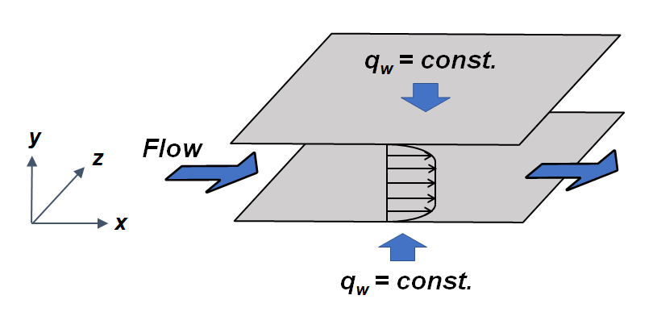
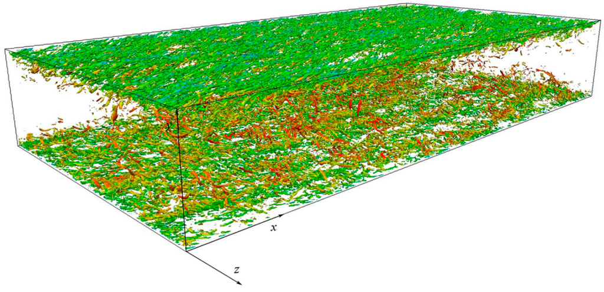
___When I joined the team, they already had a well-developed solver with several advanced features.
___ ** __
___However, it had a major limitation; it could not effectively model complex geometries or moving boundary problems.
___So the main objective was to incorporate the immersed boundary method into the solver.
Leveraging the Graphics Processing Unit (GPU) for acceleration
Adopting wall function(s) for turbulence modeling with IBM
Adding heat transfer models
Adding Discrete Element Method (DEM)
Modernizing the code for pipeline ecosystem and optimization
Developing new Elliptical equations (Poisson & Helmholtz) solver
Validation & Verification
___Aside from adding an immersed boundary to the solver, we also found several important enhancements that needed to be added into the new software
___So, we created a to-do list to guide the process.
___This list holds
___ ** ___
___One of our biggest focuses was modernizing the code for a pipeline ecosystem and optimization.
___This meant restructuring the solver to be more modular, scalable, and efficient, allowing seamless integration with different computational frameworks lin DAKUTA.
___But for this presentation I focus on only two steps
__**
___And you may ask, why I decided to talk about the Elliptical equations solver
Episode I: Why a New Poisson Solver?
Observations
Inconsistency between velocity and pressure
Spurious oscillation in force and temperature ($\mathrm{Nu}$ number)
Numerical boundary layer
Low convergence rate wrt. grid resolution
Reactions
Switching to iterative solvers
Using schedule relaxation Jacobi (SJR) for efficiency and simplicity:
Utilizing the extrapolation full multigrid (EXFMG)
Leveraging GPU acceleration
Imposing Neumann boundary condition at the immersed boundary
___While our existing FFT-based Poisson solver was highly efficient, we observed several issues that can be associated with FFT-based solvers
___ ** ___
___To address these challenges, we moved from an FFT-based solver to an iterative approach, specifically Scheduled Relaxation Jacobi (SJR).
___This method offered both efficiency and simplicity
___Thanks to SJR, we could develop a modern multigrid techniques and effectively utilize GPUs.
___which remarkably increased our preformence
___Plus, For the first time in th history of immeresed boundary, we imposed Numman BC on pressure for better accuracy.
___Now, I think we have a good idea of the solver and its power.
___Let's move on to the next step and share some case studies mainly for validation purposes.
Episode I: Falling Sphere
Moving boundaries and collision
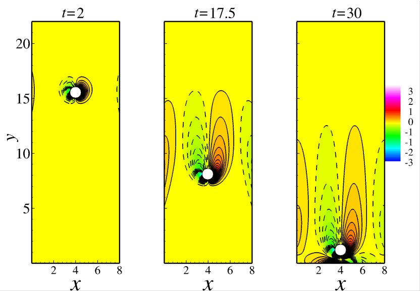
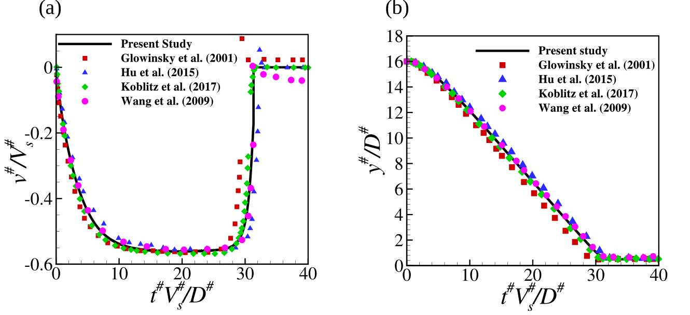
Sharp-direct forcing in comparison with experimental data
___We validated our solver in several ways, including comparisons with experimental data to confirm real-world accuracy
___One of the critical validation tests was a falling sphere in a fluid at rest and colliding with the wall.
___This test is particularly challenging due to the need for accurate force predictions and correct handling of the impact dynamics.
Episode I: Heat Transfer
Natural, forced, and mixed convection
Phase change: melting and evaporation
Relatively complex shape
Stability in a wide spectrum of physical conditions ($\mathrm{Ra}$ number)
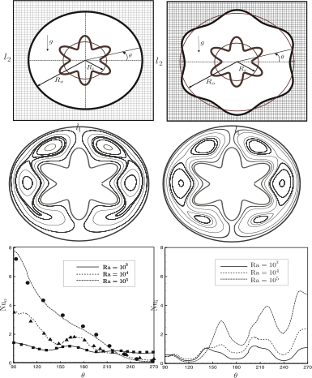
___Beyond fluid mechanics, our solver also proved capable of handling complicated-boundary heat transfer problems.
___On the left, you see a case we validated against experimental bench marks
___On the right, we extended our simulations to more complex boundaries, showing the solver's predictive power.
___Additionally, our solver is albe to handle even more complex problems, including phase change and moving boundaries in turbulent flows, which makes it highly versatile for real-world applications.
Episode I: Hovering of a Zero-Thickness Plate
Boundaries with zero thickness
Predefined motion
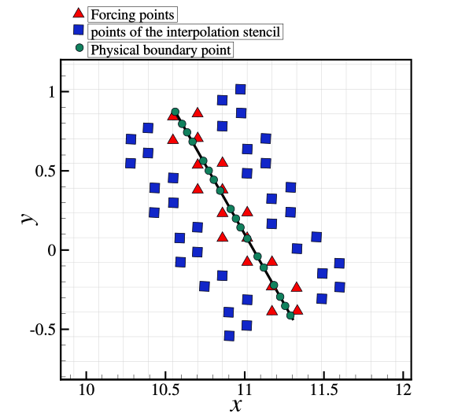
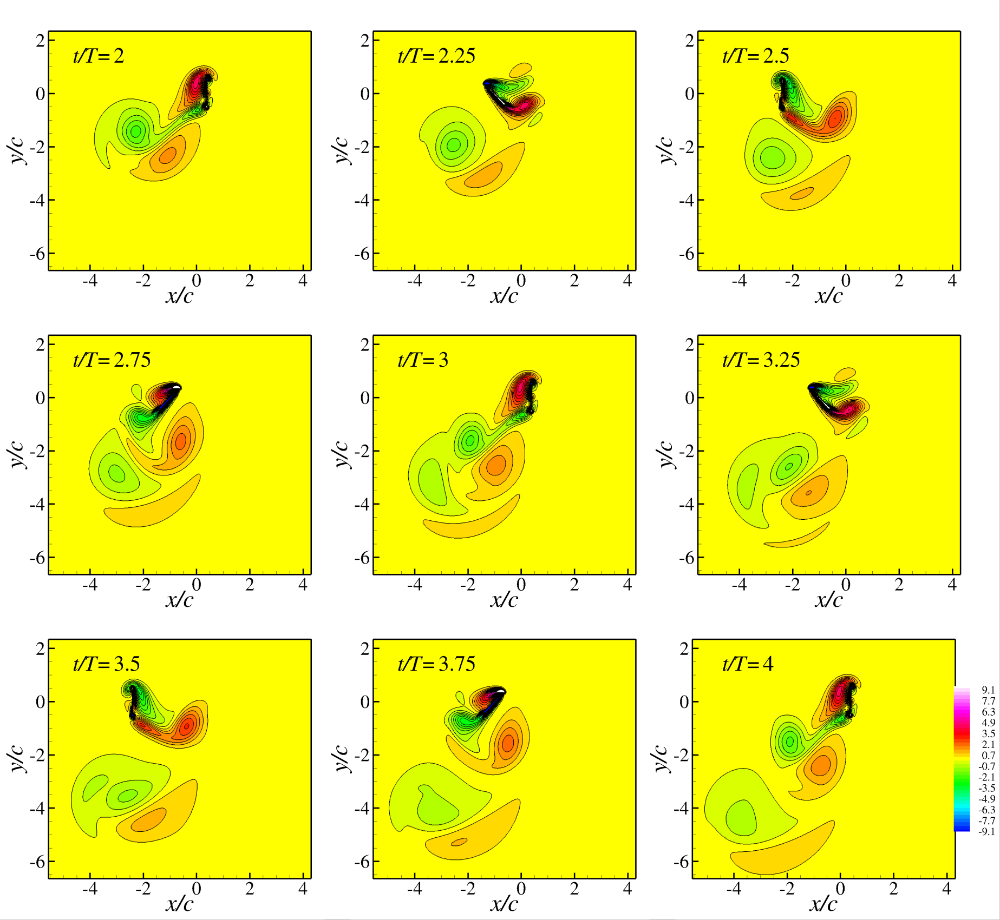
___Another important case was simulating a hovering zero-thickness plate in a fluid at rest.
___Since real-world plates always have a small but finite thickness, we compared our results to
experimental tests of a very thin plate, and the agreement was excellent.
___This case showed that our solver could accurately handle zero-thickness structures, making it highly applicable to biomechanical cases.
Episode I: Bio-Mech. Applications
___With this capability, we were able to apply the solver to various biomechanical problems, with both Newtonian and non-Newtonian flows.
___This allowed us to model cases such as blood flow around flexible membranes and robatic fishes.
Episode I: Result — An Award Winner Design
Vertical hydrokinetic turbine for designing an optimized coupled system
Received Ericsson Innovation Award for its outstanding performance (2019)
___Alrigh, lets get back to the main projects.
___In the left movie, you see the simulation of a vertical hydrokinetic turbine.
___Although we used a URANS model, the solver was able to capture very detailed flow features, including
___the formation of turbulent vortices,
___Also was accurate in prediction of hydrodynamic forces, closely matching experimental observations.
___I have to point out that this level of fidelity was sufficient not only for analysis but also for optimization.
___Using this simulation framework, we were able to optimize the turbine design and propose a novel coupled system for energy harvesting.
___And I have to highlight here that this innovative work was recognized with the Erikson Innovation Award for Oceanic Systems in 2019.
Episode I: Result
Vortex-Induced Vibration for Aquatic Clean Energy
___In addition to hydrokinetic turbines, we also applied our solver to Vortex-Induced Vibration (VIV) systems
___This turbine was interoduced in 2010 for extraxting energy in the oceans.
___We simulated VIV for a single cylinder and verified results with experiments and Fluent.
___Then we built a high-throughput pipeline to run massive parametric studies for optimization.
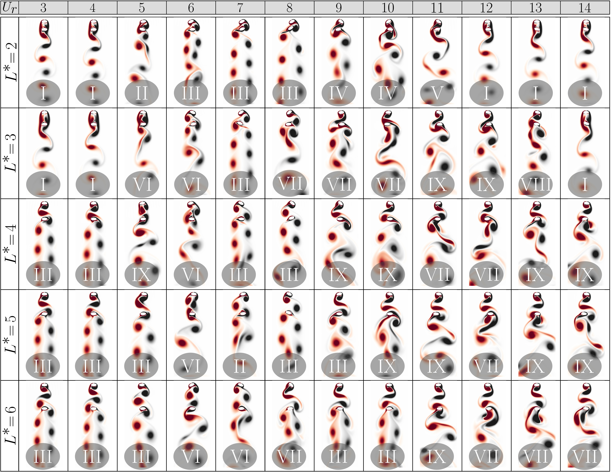
A comprehensive parameter study was conducted to enhance understanding and optimize energy harvesting (~23%)
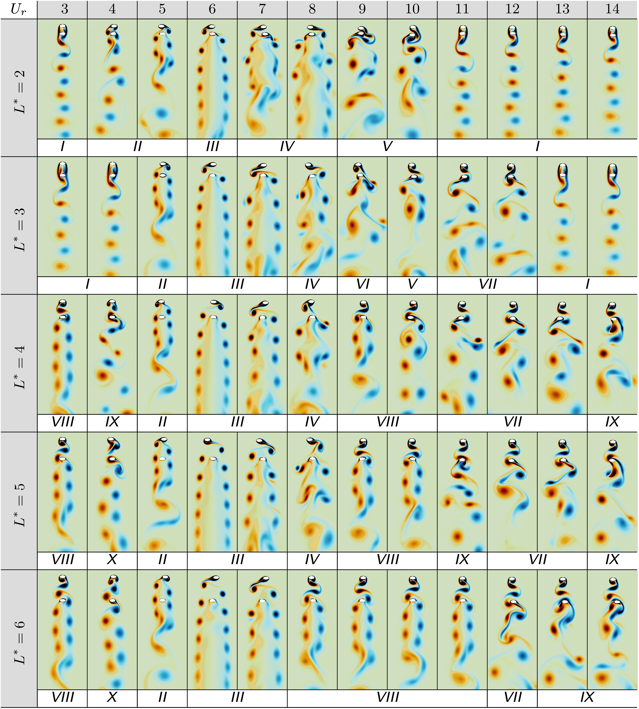
___Now lets see the effect of the different configuration of the system
___We conducted a huge number of simulations, thanks to the advanced feature of our solver that let us employ all computational resources, continuously
__**__
___By using this data, we could enhance the system's efficiency by 23%.
Episode I: Harnessing the Water Energy
Episode II: Improving Computational Efficiency Further
___Moving into Episode two, I'd like to talk about our work on improving computational efficiency by adaptive mesh refinement method.
Episode II: Adaptive Mesh Refinement
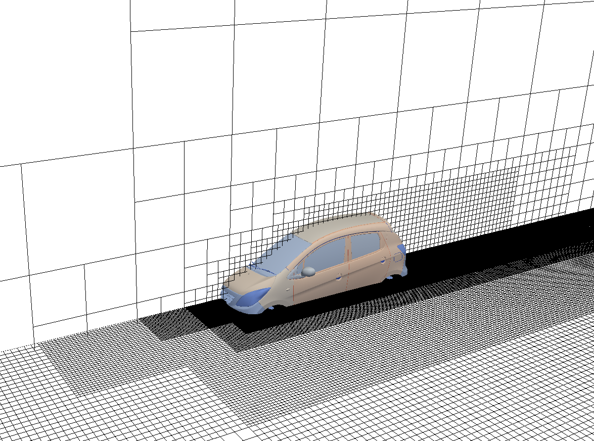
___After conducting these simulations, we realized the importance of the efficiency for real-world cases
___So we decided to make the solver better by adding adaptive mesh refinement methods
Episode II: Adaptive Mesh Refinement — Result
The flow over a fixed cylinder at $\mathrm{Re}=100,\,200$
The velocity (vorticity) is correctly captured without dissipation
The computation costs are $67$% lower without sacrificing quality
The pressure is correctly captured without dissipation
___We next considered a classic CFD test case: a cylinder in uniform flow.
__This simulation helped us confirm that our solver behaves accurately under conditions where the boundary is fixed but the domain changes dynamically.
__We were satisfied to see that it captured the vorticity field effectively
____________________________________________________________________________
____________________________________________________________________________
__Next, we turned our attention to calculating pressure.
__While classical immersed boundary methods often struggle to accurately capture the pressure boundary condition at an object’s surface, our Poisson solver makes this far more precise.
__Here, you can clearly see how smoothly and accurately the pressure develops at the boundary throughout the domain.
Episode II: Adaptive Mesh Refinement — Result
The flow over a fixed cylinder at $\mathrm{Re}=100,\,200$
The velocity (vorticity) is correctly captured without dissipation
The computation costs are $67$% lower without sacrificing quality
The pressure is correctly captured without dissipation
___We next considered a classic CFD test case: a cylinder in uniform flow.
__This simulation helped confirm that our solver behaves accurately under conditions where the boundary is fixed but the domain changes dynamically.
__We were satisfied to see that it captured the vorticity field effectively
____________________________________________________________________________
____________________________________________________________________________
__Next, we turned our attention to calculating pressure.
__While classical immersed boundary methods often struggle to accurately capture the pressure boundary condition at an object’s surface, our Poisson solver makes this far more precise.
__Here, you can clearly see how smoothly and accurately the pressure develops at the boundary throughout the domain.
Episode II: Adaptive Mesh Refinement—Result
Two cylinders moving towards each other
Predefined motion with acceleration
The Pressure is correctly captured without dissipation
The surface pressure is accurately measured
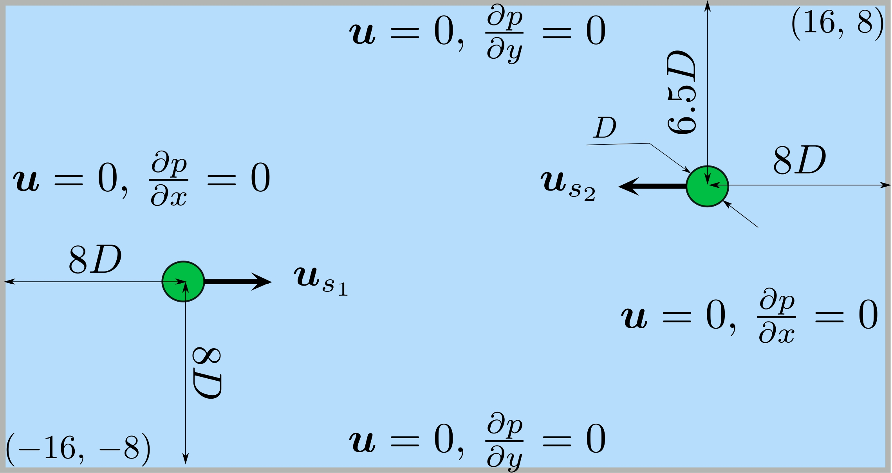
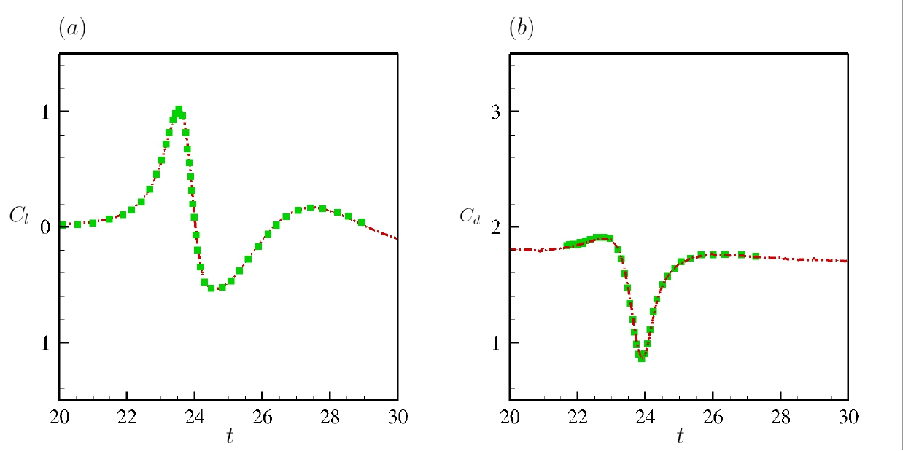
___After we resolved the initial issues, we tackled problems involving moving boundaries.
___For instance, this example involves two cylinders that first oscillate and then move toward each other.
___Although this might seem like a simple scenario, it's actually quite challenging—especially when calculating the pressure as the cylinders pass one another, which is typically difficult for moving boundary solvers.
___In this video, you can see that not only was the pressure captured accurately, but we also achieved it by an exceptionally low overall resolution
Episode II: Adaptive Mesh Refinement—Result
Two cylinders moving towards each other
Predefined motion with acceleration
The Pressure is correctly captured without dissipation
The surface pressure is accurately measured
___After we resolved the initial issues, we tackled problems involving moving boundaries.
___For instance, this example involves two cylinders that first oscillate and then move toward each other.
___Although this might seem like a simple scenario, it's actually quite challenging—especially when calculating the pressure as the cylinders pass one another, which is typically difficult for moving boundary solvers.
___In this video, you can see that not only was the pressure captured accurately, but we also achieved it by an exceptionally low overall resolution
Episode II: Adaptive Mesh Refinement — Result
Rushton Turbine at Reynolds=12000
___Alrigh, lets get back to the main projects.
___In the left movie, you see the simulation of a vertical hydrokinetic turbine.
___Although we used a URANS model, the solver was able to capture very detailed flow features, including:
___The formation of turbulent vortices,
___And also was accurate in prediction of hydrodynamic forces, closely matching experimental observations.
___I have to mention here this level of fidelity was sufficient not only for analysis but also for optimization.
___Using this simulation framework, we were able to optimize the turbine design and propose a novel coupled system for energy harvesting.
___This innovative work was recognized with the Erikson Innovation Award for Oceanic Systems in 2019.
Q & A
___This concludes my presentation. I'm happy to move on to the rest of the interview